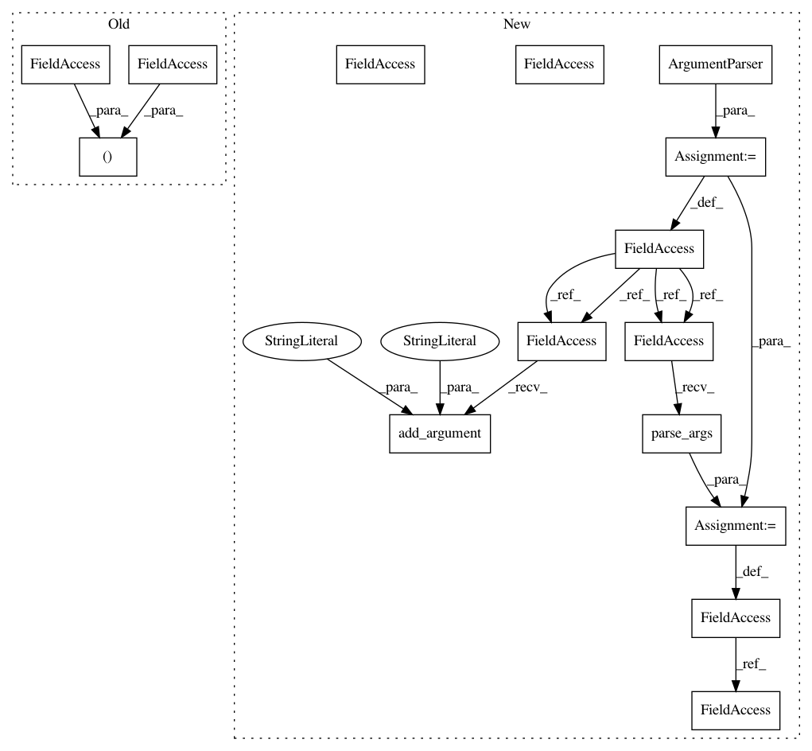

cb38a31627f152c22fb9e474c31b34da588e1134,starstack.py,,,#,192
Before Change
if __name__ == "__main__":
if len(sys.argv) < 3:
rgb1, rgb2 = make_test_images()
else:
rgb1 = read_image(sys.argv[1])
rgb2 = read_image(sys.argv[2])
After Change
if __name__ == "__main__":
parser = argparse.ArgumentParser(description="Stack astronomical images")
parser.add_argument("-t", "--test", dest="test", default=False,
action="store_true",
help="Test mode: generate images instead of reading files")
parser.add_argument("-d", action="store", default=".", dest="dir",
help="Directory to save files (default: .)")
parser.add_argument("imagefiles", nargs="*", help="2 or more input images")
args = parser.parse_args(sys.argv[1:])
if args.test:
register_all(make_test_images(), outdir=args.dir)
sys.exit(0)
if len(args.imagefiles) < 2:
parser.print_help()
sys.exit(1)
register_all(args.imagefiles, outdir=args.dir)
In pattern: SUPERPATTERN
Frequency: 3
Non-data size: 15
Instances
Project Name: akkana/scripts
Commit Name: cb38a31627f152c22fb9e474c31b34da588e1134
Time: 2020-07-26
Author: akkana@shallowsky.com
File Name: starstack.py
Class Name:
Method Name:
Project Name: akkana/scripts
Commit Name: cb38a31627f152c22fb9e474c31b34da588e1134
Time: 2020-07-26
Author: akkana@shallowsky.com
File Name: starstack.py
Class Name:
Method Name:
Project Name: PacktPublishing/Deep-Reinforcement-Learning-Hands-On
Commit Name: 3735a6f690676bf2ab29f57ca1a02c1c63565b6c
Time: 2018-02-20
Author: max.lapan@gmail.com
File Name: ch16/02_breakout_es.py
Class Name:
Method Name:
Project Name: LCAV/pyroomacoustics
Commit Name: f2e989565ab89af58dff63ab3cf89fe63af38327
Time: 2020-06-02
Author: fakufaku@gmail.com
File Name: examples/raytracing.py
Class Name:
Method Name: